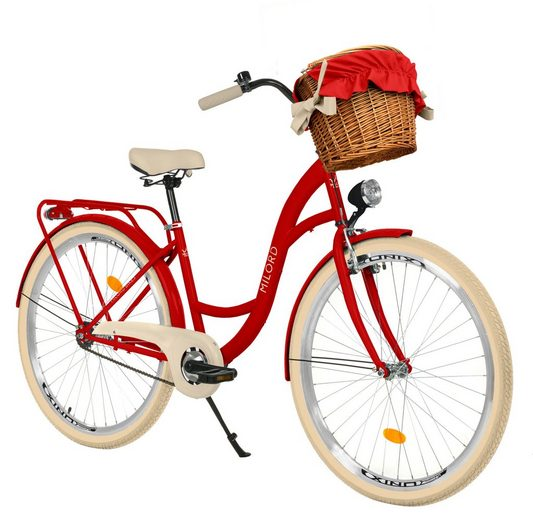

Велосипеды!
Велосипеды - это популярные средства передвижения и спортивные снаряды, состоящие из двух колес, рамы и привода. Они предоставляют эффективный способ транспортировки, способствуют здоровью и физической активности. Велосипеды разнообразны: от горных и шоссейных для профессиональных гонщиков до городских и складных для повседневного использования. Велосипеды также являются экологически чистым средством передвижения, способствуя уменьшению выбросов углекислого газа.

Как велосипед влияет на здоровье

Велосипеды оказывают положительное воздействие на здоровье в различных аспектах:
Кардиоваскулярная система: Катание на велосипеде является отличной аэробной активностью, которая улучшает сердечно-сосудистую систему. Это способствует укреплению сердечного мышцы, улучшению кровообращения и снижению риска сердечно-сосудистых заболеваний.
Физическая форма и выносливость: Регулярные поездки на велосипеде помогают развивать мышцы, укреплять ноги, ягодицы и спину. Это также способствует улучшению общей физической формы и выносливости.
Суставы и здоровье спины: Велосипеды могут быть менее нагружающими для суставов по сравнению с некоторыми другими видами физической активности. Катание на велосипеде может помочь укреплению мышц спины и улучшению осанки.
Управление весом: Велосипедисты могут эффективно сжигать калории, что способствует контролю веса. Это особенно полезно для тех, кто стремится поддерживать здоровый вес или снизить избыточный вес.
Психологическое благополучие: Активность на свежем воздухе и физическое упражнение на велосипеде могут помочь снижению стресса и улучшению настроения. Велосипедирование также способствует выработке эндорфинов, что может привести к ощущению радости и улучшению психологического благополучия.
Экологические выгоды: Использование велосипеда вместо автомобиля в повседневной жизни способствует снижению уровня загрязнения воздуха и выбросов углекислого газа, что благотворно воздействует на окружающую среду и общественное здоровье.
Регулярное велосипедирование может стать важным элементом активного и здорового образа жизни.
Велосипеды - это популярные средства передвижения и спортивные снаряды
Велосипеды - это популярные средства передвижения и спортивные снаряды